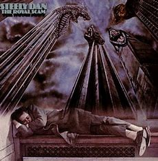
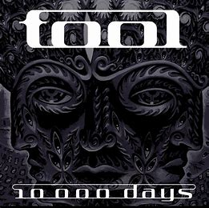
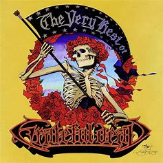

Steely Dan is an American Rock Fusion band from the 70s. The two founders, Donald Fagen and Walter Becker, met in a music college and formed the band in 1971. They are known for being a studio only duo who utilizes a rotating cast of session musicians to play the songs they write.
The Royal Scam is one of Steely Dan's best albums.
TOOL is an american progressive metal band formed in LA in the 90s. They are known for their complex songs, with crazy odd-meter riffs and weird lyrics.
10,000 Days is one of TOOL's best albums.
The Grateful Dead was an American psycadelic rock band formed in California in 1965. They are the most legendary jam band of all time, pioneering the genre with many taking inspiration, such as Phish. Known for their eclectic style that fused elements of rock, blues, jazz, folk, country, bluegrass, rock and roll, gospel, reggae, and world music with psychedelia, the band is famous for improvisation during their live performances and for their devoted fan base, known as "Deadheads"
The Very Best of the Grateful Dead is a compilation album with lots of the bands greatest songs.